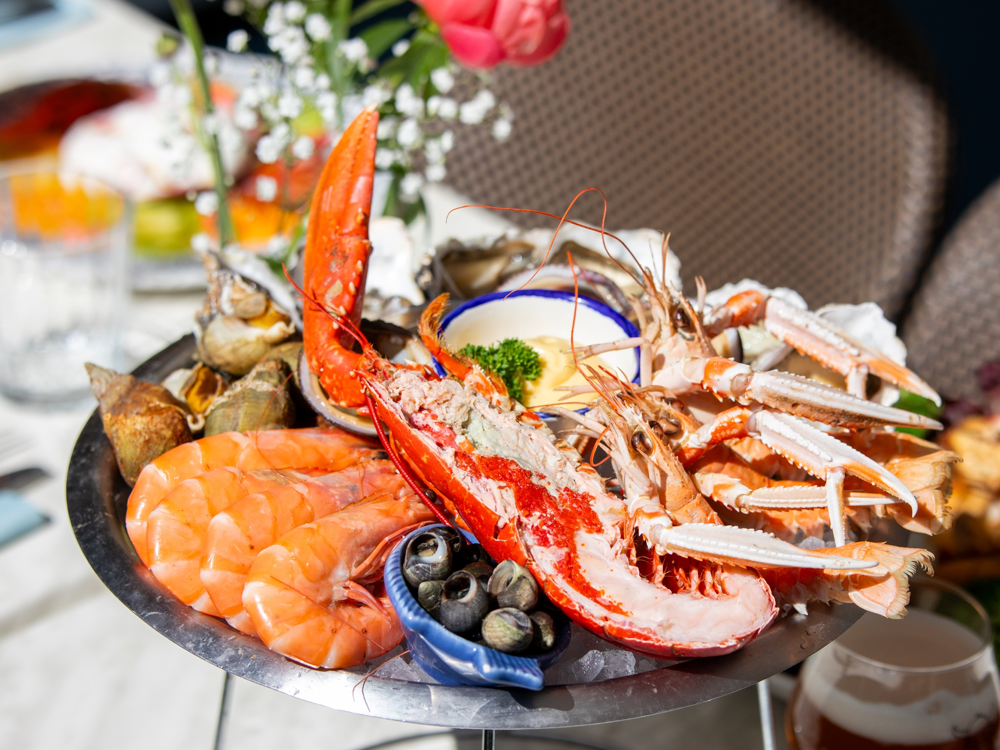
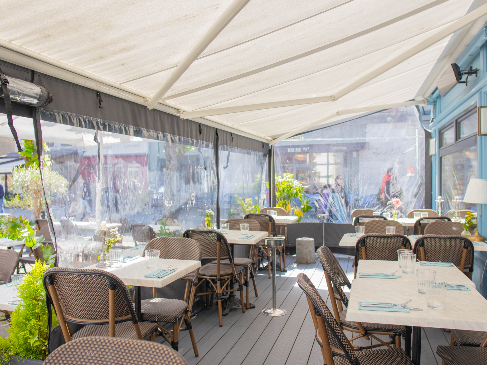
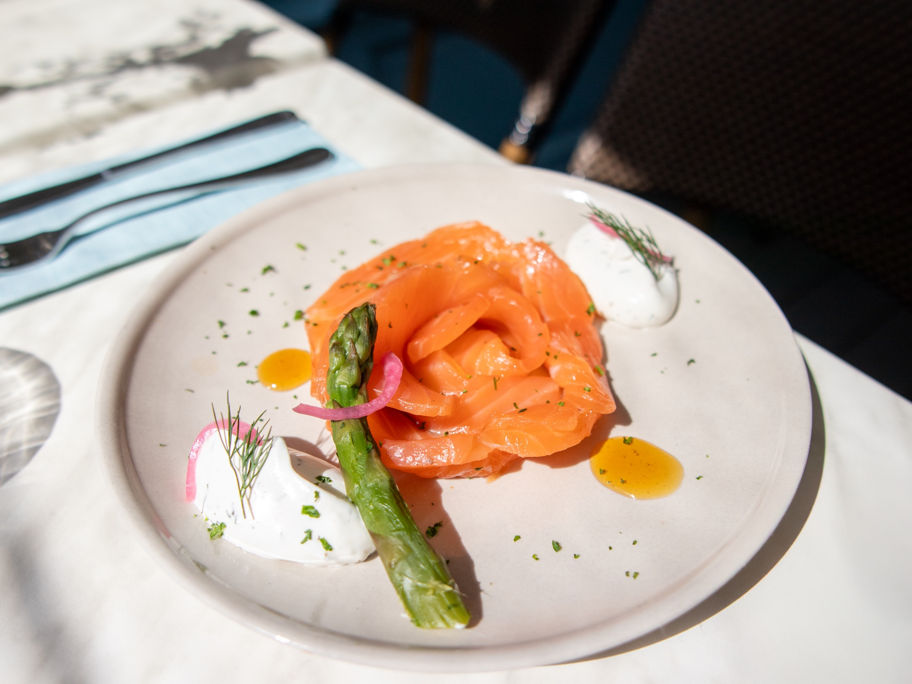
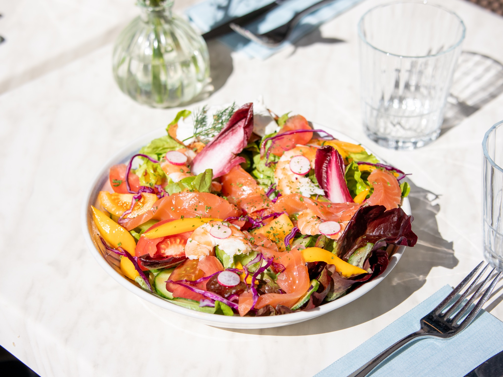
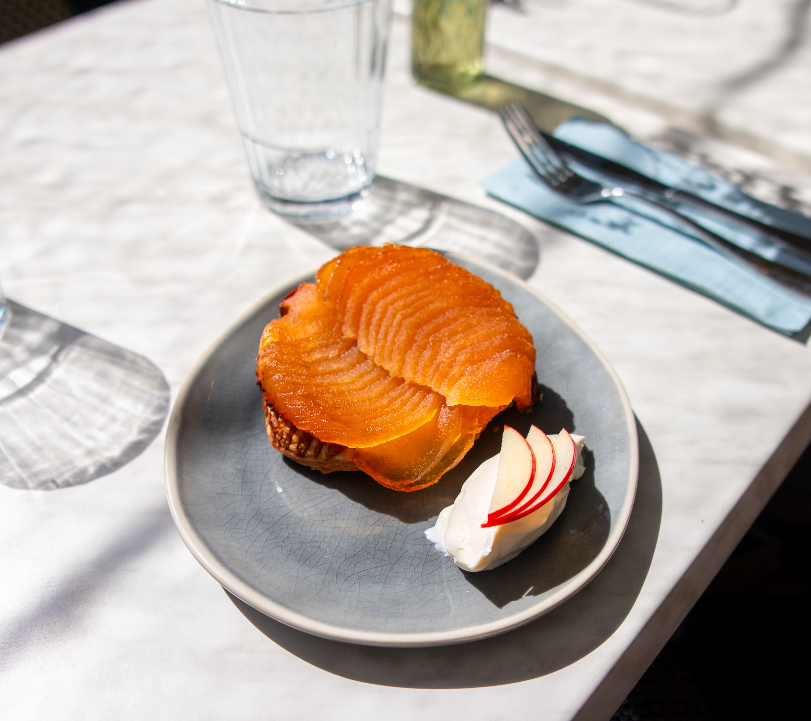
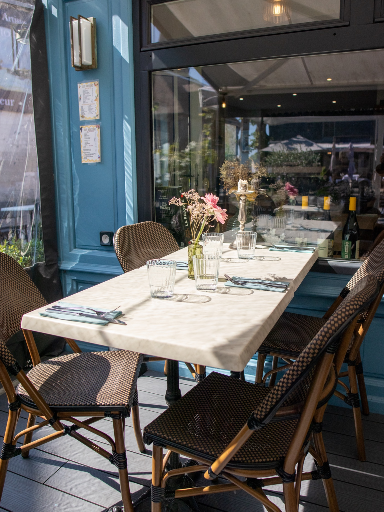
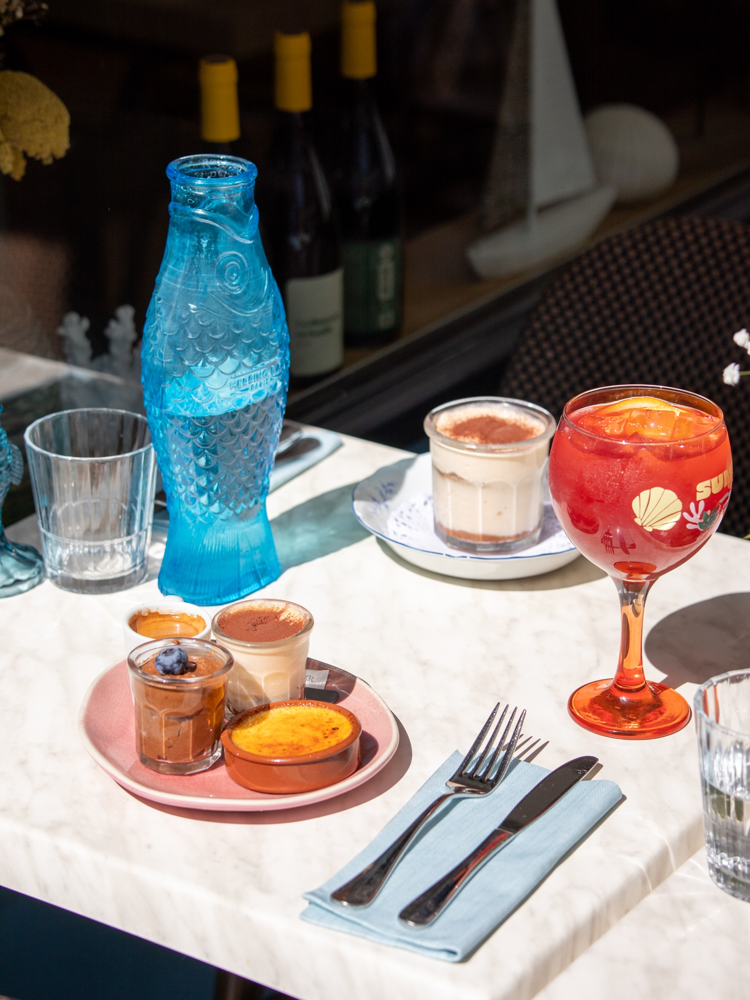

Le Grand Plateau
Huîtres de Normandie, tourteau, crevettes bouquet, bulots, langoustines. Pour deux.

Honfleur · depuis 2024
Table marine au bord du Vieux Bassin.
Pêche du matin, service du soir.
À deux pas du Vieux Bassin, Les 4 Mâts pose son ancre entre les maisons à colombages et les mâts des chalutiers. Un port qui sent l'iode, une cuisine qui s'en nourrit.
Nous travaillons avec les pêcheurs de la côte, au jour le jour. Ce qui entre le matin repart dans l'assiette le soir.
Pas de carte figée. Pas de sauce qui cache. Juste le produit, le feu, une vinaigrette.
C'est plus simple qu'il n'y paraît. C'est plus difficile qu'on ne le croit.

Quatre instants choisis. La carte complète évolue au fil des arrivages, demandez-la en salle ou téléchargez-la ci-dessous.

Huîtres de Normandie, tourteau, crevettes bouquet, bulots, langoustines. Pour deux.

Pavé épais cuit à la peau, beurre moussé, citron confit, légumes de la côte.

Crevettes, avocat, pamplemousse, jeunes pousses, vinaigrette aux agrumes.

Pommes du Pays d'Auge caramélisées, pâte feuilletée, crème fraîche épaisse.
Une brigade jeune, réunie autour d'une même idée : que ce qui arrive dans l'assiette ait été pêché, cuisiné, pensé le jour même. Au commande, Paul et Jade, la vingtaine. Autour d'eux, une équipe soudée qui partage la même exigence.

En cuisine, une brigade jeune et affûtée. En salle, un service qui sait nommer chaque plat, chaque provenance, chaque pêcheur. Personne ne vient du sérail gastronomique classique, et c'est volontaire. Pas de révérence inutile, pas de carte figée. Juste une exigence tranquille.
La carte évolue au gré des arrivages. Les assiettes se partagent. Et quand vous entrez, vous êtes accueillis comme chez des amis qui reçoivent, pas comme des clients qu'on sert.
Quelques images prises en cuisine, en salle, sur le port. Un aperçu du quotidien de la maison.


Au cœur du centre historique, entre les maisons à colombages et les chalutiers. Le Vieux Bassin à cinq pas.
4 rue de la Ville
14600 Honfleur
Du mardi au dimanche
| Déjeuner | 12h00 à 14h30 |
| Dîner | 19h00 à 23h00 |
Fermé le lundi.